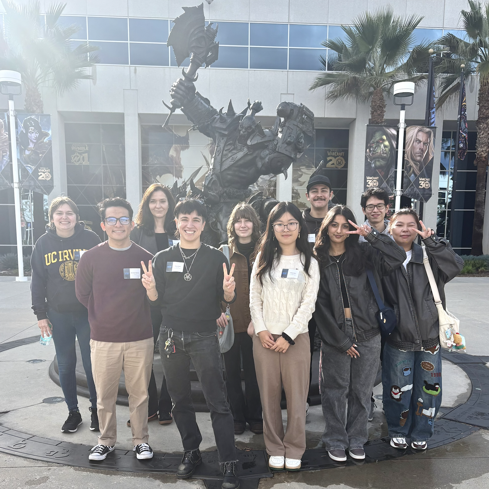

What's up? I'm Travis!
I've been making games for over 10 years.
My current focus is educating the next generation of game developers as an Adjunct Professor at UC-Irvine and LCAD, teaching courses on game development and interface programming.
I'm the Creative Director and studio founder on are we good? 🙈, a narrative game about boy bands and fandom that's set on a mobile phone and uses real photography. are we good? 🙈 was selected for the ELEVATE 2023 program, a grant and mentorship program funded by Netflix, and is currently in development. Previously, I worked on mobile games at Blizzard and EA and freelanced for a number of indie clients.
I'm also a fashion and fantasy photographer, and my games are often multi-media. Caterpillar, a trashgame I made about my personal experience with gender dysphoria, was featured in the 2019 Indie Bits festival (play it on Itch here), and used real cut-out pieces of magazines.
I'm obsessed with games set on digital interfaces. I've created multiple Twine sketches that take place on the internet and a dating sim that takes place on a mobile phone called 🍑🍾👞 (peach vodka). 🍑🍾👞 was a week-long game jam project that now has over 50k+ views and 30k+ plays on itch.io, with no marketing effort!
I'm known (among huge nerds) for my blog of beginner Unity shader tutorials. This discipline, graphics programming, is my engineering specialization, and I have a whole theory about how graphics programming and photography are the same art.
As a queer trans guy, I'm passionate about equity in the game industry. I mentor & volunteer frequently, including guest lecturing for game development classes and events at UC Berkely, UCLA, UCSC, UCI, and LSU, and volunteering for professional development programs such as the Glitch Power Leveling mentorship program at GDC and Code Coven's game incubator.
Browse my Itch, Moby Games credits, and GitHub.